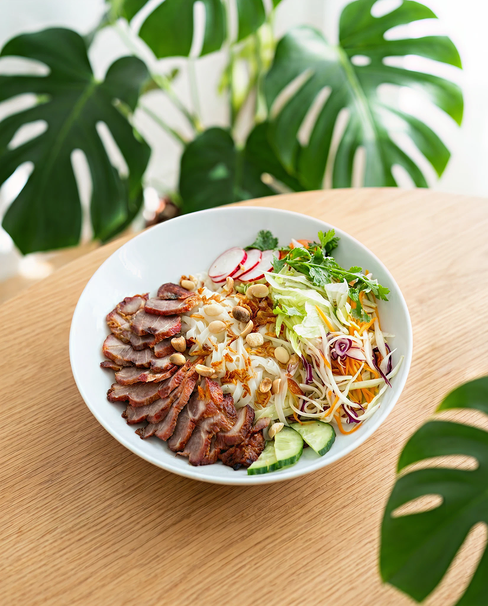
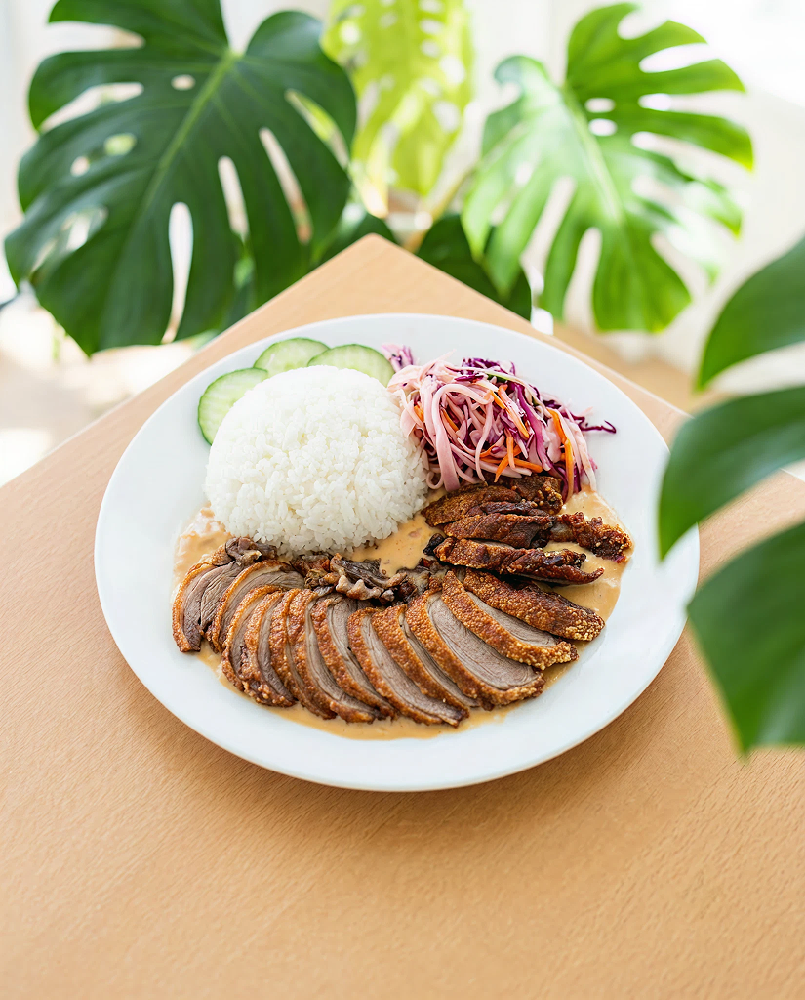
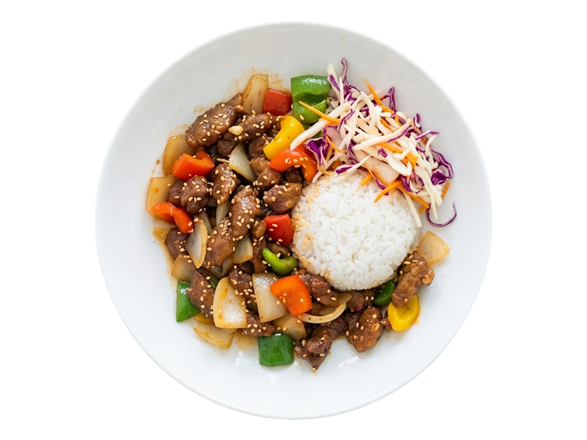
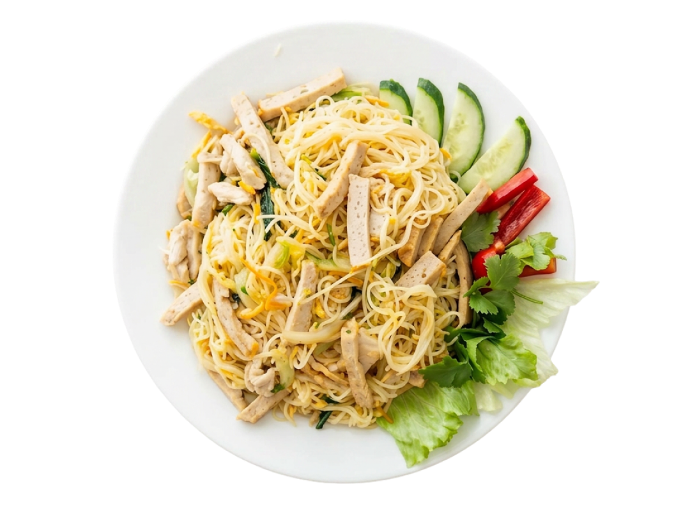

Něco málo
o Daki
DAKI je rodinné bistro. Naši rodiče Hanh a Vinh prodávali celý život oblečení — ale jejich srdce vždycky patřilo kuchyni. Vařit pro děti pro ně bylo způsobem, jak po dlouhém dni říct „mám vás rád“ — a zároveň si přivolat kousek domova z Vietnamu. Po letech si splnili sen a otevřeli si místo, kde vaří stejně jako svým dětem: s láskou, trpělivostí a roky zkušeností v každém jídle. A dnes stejně vaří i pro vás.


Polední akce
Od 10–14 hodin k vybranému jídlu dostanete i polévku zdarma.
Smažená rýže s kuřecím masem
150 Kč
Vepřové maso ve sladkokyselé omáčce
169 Kč
Smažené rýžové nudle s kuřecím masem
150 KčKde nás najdete
Fryštátská 151/15, Fryštát
733 01 Karviná 1
Po–Pá
10:00 – 18:00
10:00 – 18:00
Ne
11:00 – 19:00
11:00 – 19:00